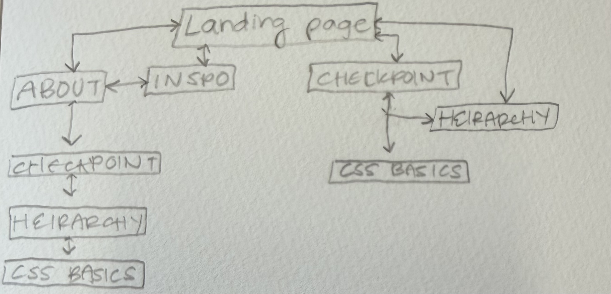

br>RGB red green blue for SCREEN (additive color model) CMYK cyan magenta yellow black for PRINT(subtractive color model) RGB always when coding the CSS
I can't figure out how to link my email!! I checked google and it says but its not working!!!
I wanted to start centering my text and links because that layout is pleasing to me. I played with color palletes and have landed on powder yellow, plum, and bright pink. I seperated the main nav links and the assignment links on the main page, i want to turn the assignment links into a seperate page to keep them together.
these are the font embed codes from google fonts....check out ADOBE FONTS NEXT

I CONNECTED ALL THE NAVIGATION.. forwards and backwards through each link to and from the home page.
REFLECTION (9/22) 1: How did you style the main navigation? I made the background a powder yellow, centered the pink text. made the text and header different fonts. I also made them different colors to complete the three main colors of my color pallete from my inspo moodboards 2:What changed when the navigation became more visually consistent? I had to reorganize my code, I realized a lot of the text was all over the place and I needed to fit it into consistent places, all heading under h1, all sub under h2, all body under p, etc. 3: Did uniform navigation improve the experience? Why or why not? YES!! I fixed all the links between pages and this helped tremendously. It was incredibly satisfying to see each page interconnected. I can't wait to make the web more complex, different pages looping to more than just the home page, etc. 4: What belongs in the root stylesheet? Whatever you want to be universally true about the style of every single element across each page. 5: What belongs in a child stylesheet? Whatever you want to be applied to the specific page you are working on. I plan on having each page feel unique yet grounded in the overall style. 6: What still feels unresolved? I want to figure out what elements I'm keeping consistent, and which elements will be unique to each page!!